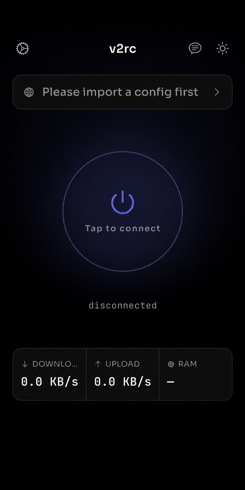
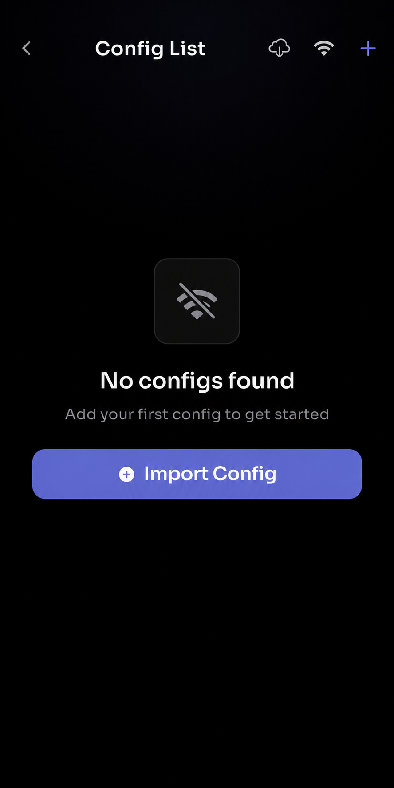
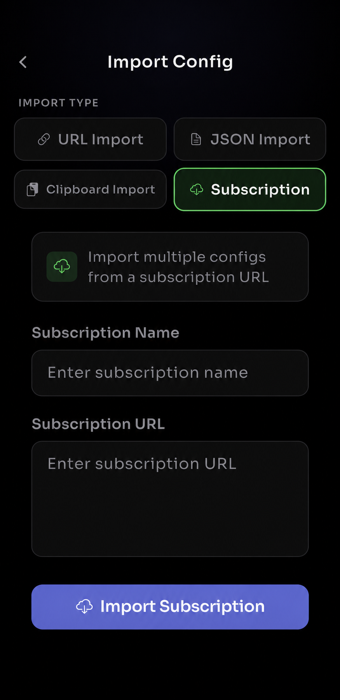
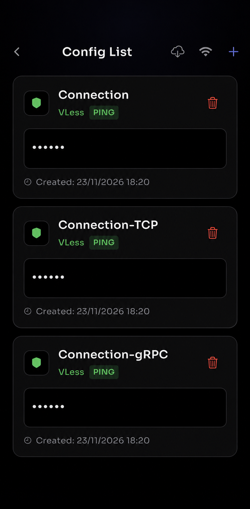
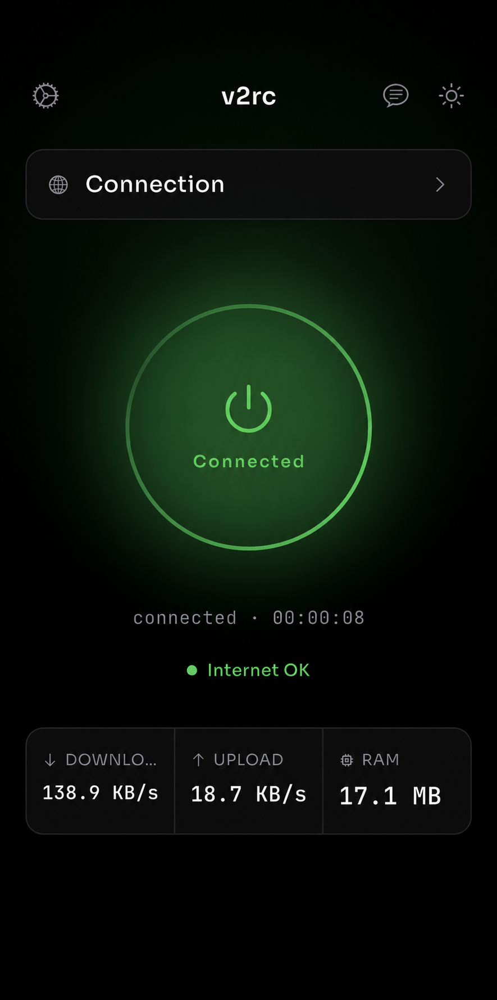
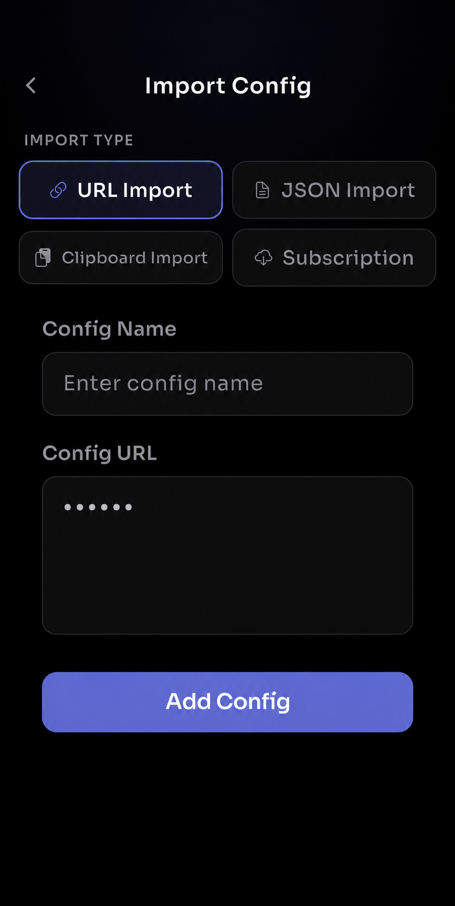
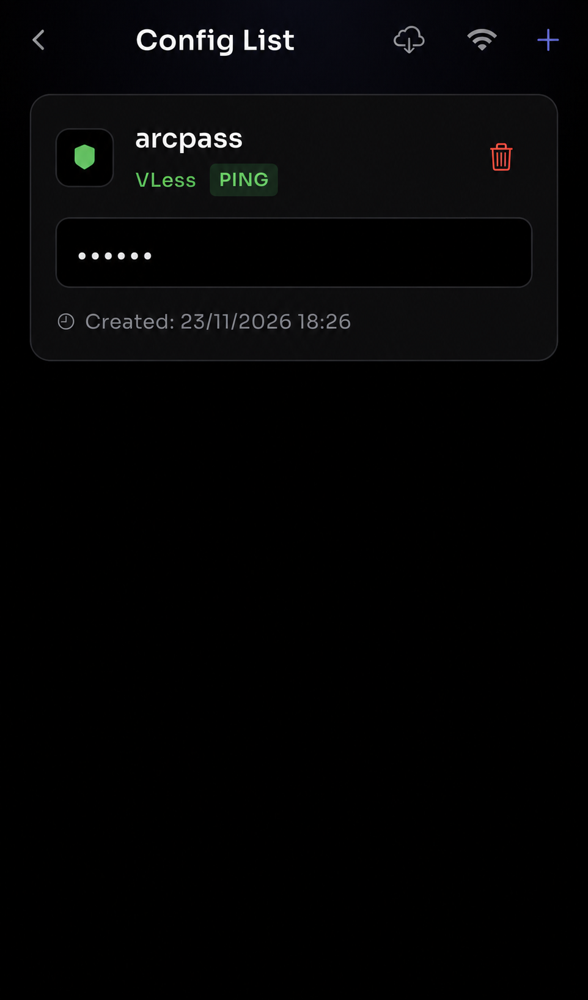
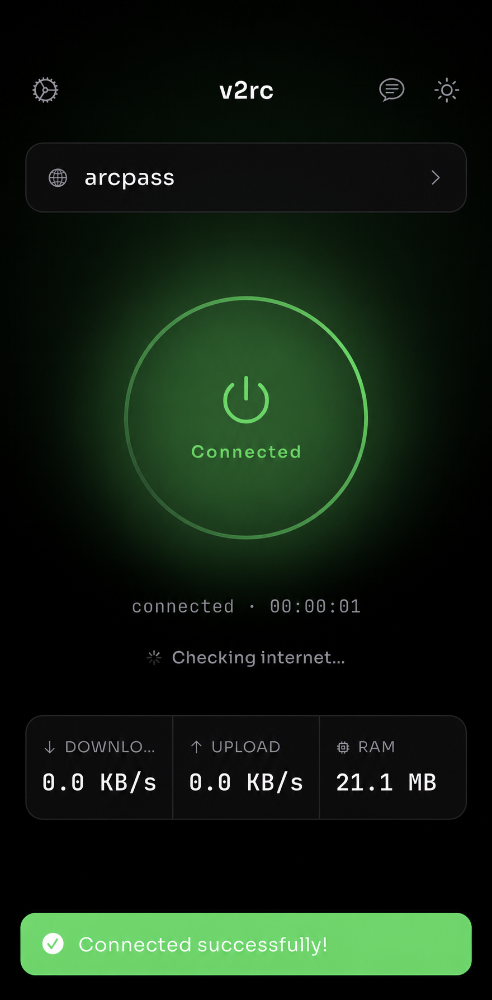

Основной способ
Подписка
Есть два способа подключения: подписка и обычная ссылка. Достаточно выбрать один. Обычная ссылка — в блоке «Прежний способ» ниже.
Это постоянная ссылка для загрузки настроек VPN.
Добавьте её один раз. При замене сервера обновите подписку в приложении — ссылка останется прежней.
Показать ссылку подписки
Как подключиться по подписке
Скопируйте ссылку подписки кнопкой выше и выберите своё устройство.
iPhone / iPad · V2RC
- Установите V2RC из App Store или откройте уже установленное приложение.
- В кабинете нажмите «Копировать ссылку подписки», затем перейдите в V2RC.
- На главном экране V2RC нажмите верхнюю строку с глобусом «Please import a config first». Если подключение уже добавлено, в этой строке будет его название.
Показать скриншот

- На экране Config List нажмите Import Config («Импортировать»). Если список уже заполнен, нажмите + справа сверху.
Показать скриншот

- На экране Import Config выберите Subscription. В поле Subscription Name введите название, например ArcPass. В поле Subscription URL вставьте скопированную ссылку подписки. Нажмите внизу Import Subscription и дождитесь загрузки списка подключений.
Показать скриншот

- В списке Config List нажмите самое верхнее подключение — Connection.
Показать скриншот

- Вернитесь на главный экран стрелкой ‹ слева сверху, если он не открылся автоматически. Проверьте, что в верхней строке выбрано Connection. Нажмите большую круглую кнопку Tap to connect. При первом запуске разрешите iOS добавить конфигурацию VPN.
- Дождитесь зелёной надписи Internet OK под кнопкой. Подключение готово. Если отображается только Connected, дождитесь результата проверки интернета.
Показать скриншот

Android · v2rayNG
- Установите v2rayNG или откройте уже установленное приложение.
- Откройте меню ☰ → Группы (Subscription group settings) и нажмите +. Укажите название ArcPass, вставьте ссылку подписки в поле URL и сохраните.
- Вернитесь к списку подключений и выберите Обновить подписку в меню приложения. Выберите профиль Connection и нажмите кнопку запуска VPN. Подтвердите запрос Android.
- В настройках включите Автоматически обновлять подписки. Для группы ArcPass также должно быть включено Использовать автообновление.
Windows · v2rayN
- Скачайте v2rayN для Windows, распакуйте архив и запустите приложение от имени администратора.
- Откройте Subscription group settings («Настройки групп подписок») и нажмите Add («Добавить»). Укажите название ArcPass, вставьте ссылку подписки в поле адреса и сохраните.
- В меню подписок выберите обновление без прокси, чтобы загрузить подключения. Выберите профиль Connection, затем включите Global и Enable TUN.
- В настройках группы ArcPass задайте интервал автообновления, например 60 минут.
Обычная ссылка — прежний способ
Дополнительный вариант
Привычная ссылка на одно подключение. Используйте её, если вам удобнее прежний способ или приложение не поддерживает подписки.
При замене сервера нужно заново скопировать обычную ссылку из кабинета и импортировать её в приложение.
Показать обычную ссылку
Как подключиться по обычной ссылке
Скопируйте обычную ссылку кнопкой выше и выберите своё устройство.
iPhone / iPad · V2RC
- В кабинете раскройте блок «Прежний способ» и нажмите «Копировать обычную ссылку». Откройте V2RC.
- На главном экране нажмите верхнюю строку с глобусом Please import a config first (или название уже выбранного подключения).
- На экране Config List нажмите Import Config. Если подключения уже есть, нажмите + справа сверху.
- Выберите URL Import. В поле Config Name введите название, например arcpass. В поле Config URL вставьте скопированную обычную ссылку. Нажмите Add Config. Для этого способа не выбирайте Subscription.
Показать скриншот

- В списке Config List нажмите добавленное подключение с указанным вами названием — в примере arcpass.
Показать скриншот

- Вернитесь на главный экран стрелкой ‹, если он не открылся автоматически. Нажмите большую круглую кнопку Tap to connect. При первом запуске разрешите iOS добавить конфигурацию VPN.
Показать скриншот

- Дождитесь зелёной надписи Internet OK. Надпись Checking internet… означает, что проверка ещё идёт. Само сообщение Connected successfully! ещё не заменяет результат проверки интернета.
Android · v2rayNG
- Установите v2rayNG или откройте уже установленное приложение.
- Нажмите + и выберите Import from Clipboard («Импорт из буфера обмена»). Так вы добавите скопированную обычную ссылку.
- Выберите добавленное подключение и нажмите кнопку запуска VPN. Подтвердите запрос Android.
Windows · v2rayN
- Скачайте v2rayN для Windows, распакуйте архив и запустите приложение от имени администратора.
- В главном окне нажмите Ctrl+V, чтобы добавить скопированную обычную ссылку.
- Выберите добавленное подключение. Включите Global и Enable TUN.